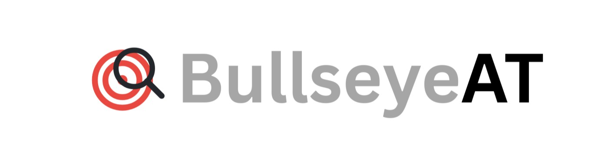
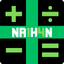

We develop accessible technology designed to improve independence and accessibility for people with visual impairments and other accessibility needs.
Our website is currently under construction.
We are working to bring you more information about our company, products and developments. Please check back soon for updates.
The Nathan 14 Assistive Technology Device is designed to make advanced mathematics and classroom learning more accessible for students with visual impairments. It combines specialised hardware and accessible software to support independence in educational and examination environments.

An accessible scientific calculator developed by Bullseye Assistive Technology Limited to help students perform calculations with clarity, speed and confidence.
The Nathan 14 Scientific Calculator supports students preparing for Leaving Certificate Higher Level Mathematics, GCSE Mathematics and other secondary-school or college-level mathematics examinations. It brings scientific calculator functions to a convenient digital interface for study, practice and eligible examinations.
Our aim is to develop technology that helps students access educational tools more independently. Examination use is subject to the applicable examination authority's rules and approval.
Hear more about assistive technology and the work behind Nathan 14 through these podcast appearances.